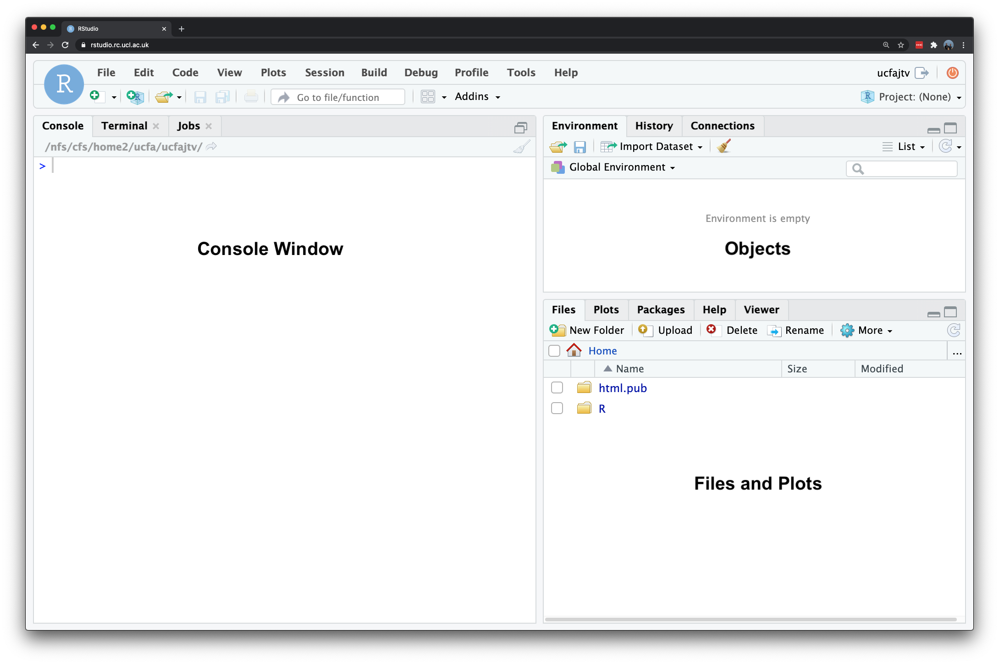

1 R for Data Analysis
1.1 Installation of R
R is a programming language originally designed for conducting statistical analysis and creating graphics. The major advantage of using R is that it is open source, can be used on any computer operating system, and is free for anyone to use and contribute to. Because of this, it has rapidly become the statistical language of choice for many academics and has a large user community with people constantly contributing new packages to carry out all manner of statistical, graphical, and importantly for us, geographical tasks.
Installing R takes a few relatively simple steps involving two pieces of software. First there is the R programme itself. Follow these steps to get it installed on your computer:
- Navigate in your browser to the download page: [Link]
- If you use a Windows computer, click on Download R for Windows. Then click on base. Download and install R 4.4.x for Windows. If you use a Mac computer, click on Download R for macOS and download and install R-4.4.x.arm64.pkg for Apple silicon Macs and R-4.4.x.x86_64.pkg for older Intel-based Macs.
That is it! You now have successfully installed R onto your computer. To make working with the R language a little bit easier we also need to install something called an Integrated Development Environment (IDE). We will use RStudio Desktop:
- Navigate to the official webpage of RStudio: [Link]
- Download and install RStudio Desktop on your computer (free version!)
After this, start RStudio to see if the installation was successful and you should see something simmilar to what is shown in Figure 1.
The main windows that we will be using are:
| Window | Purpose |
|---|---|
| Console | where we write one-off code such as installing packages |
| Files | where we can see where our files are stored on our computer system |
| Environment | where our variables or objects are kept in memory |
| Plots | where the outputs of our graphs, charts and maps are shown |
1.2 Customisation of R
Now we have installed R and RStudio, we need to customise R. Many useful R functions come in packages, these are free libraries of code written and made available by other R users. This includes packages specifically developed for data cleaning, data wrangling, visualisation, mapping, and spatial analysis. To save us some time, we will install all R packages that we will need for the workshop in one go. Start RStudio, and copy and paste the following code into the console window. You can execute the code by pressing the Return button on your keyboard. Depending on your computer’s specifications and the internet connection, this may take a short while.
R code
# install packages
install.packages(c("tidyverse", "sf", "tmap", "spdep"))For Linux and macOS users who are new to working with spatial data in R, this installation of some of these libraries may fail since additional (non-R) libraries are required (which are automatically installed for Windows users). If this is the case, please refer to the information pages of the sf library for instructions.
Once you have installed the packages, we need to check whether we can in fact load them into R. Copy and paste the following code into the console, and execute by pressing Return on your keyboard again.
R code
# load packages
library(tidyverse)
library(sf)
library(tmap)
library(spdep)You will see some information printed to your console but as long as you do not get any of the messages below, the installation was successful. If you do get any of the messages below it means that the package was not properly installed, so try to install the package in question again.
Error: package or namespace load failed for <packagename>Error: package '<packagename>' could not be loadedError in library(<packagename>) : there is no package called '<packagename>'
Many packages depend on other packages (so-called dependencies). It happens at times when you install a package it does not install all dependencies. If you encounter any of the above errors in reference to a package that you did not explicitly install, it is probably a missing dependency. Simply install the dependency by typing install.packages('<dependencyname>') and try loading all packages again.
1.3 Getting started with R
Unlike traditional statistical analysis software like Microsoft Excel or Stata, which often rely on point-and-click interfaces, R requires users to input commands to perform tasks such as loading datasets or fitting models. This command-based approach is typically done by writing scripts, which not only document your workflow but also allow for easy repetition of tasks.
If you are familiar with Stata’s do-file you will find that the approach to programming in R is comparable.
We will first start off with using to test out some of R’s in-built functionality by creating a few variables. In your console, let us go ahead and conduct some quick maths. At their most basic, all programming languages can be used like calculators.
In your RStudio console, you should see a prompt sign > on the left hand side. This is where we can directly interact with R. Anything that appears as red in the command line means it is an error or a warning. If you just see a > it means you can type in your next line, whereas a + means that you have not finished the previous line of code. As will become clear, + signs often appear if you do not close brackets or you did not properly finish your command in a way that R expected.
1.3.1 Command input
Type in 10 * 12 into the console and execute.
R code
# multiplication
10 * 12[1] 120Once you press return, you should see the answer of 120 returned below.
1.3.2 Storing variables
Rather than use raw or standalone numbers and values, we primarily want to use variables that store these values (or groups of them) under a memorable name for easy reference later. In R terminology this is called creating an object and this object becomes stored as a variable. The <- symbol is used to assign the value to the variable name you have given. Let us create two variables to experiment with.
Type in ten <- 10 into the console and execute.
R code
# store a variable
ten <- 10You will see nothing is returned in the console, but if you check your environment window it has now appeared as a new variable that contains the associated value.
Type in twelve <- 12 into the console and execute.
R code
# store a variable
twelve <- 12Once again, you will see nothing returned to the console but do check your environment window for your variable. We have now stored two numbers into our environment and given them variable names for easy reference. R stores these objects as variables in your computer’s RAM memory so they can be processed quickly. Without saving your environment, these variables would be lost if you close R. Now we have our variables, we can go ahead and execute the same simple multiplication:
Type in ten * twelve into the console and execute.
R code
# using variables
ten * twelve[1] 120You should see the output in the console of 120. Whilst this maths may look trivial, it is, in fact, extremely powerful as it shows how these variables can be treated in the same way as the values they contain.
Next, type in ten * twelve * 8 into the console and execute.
R code
# using variables and values
ten * twelve * 8[1] 960You should get an answer of 960. As you can see, we can mix variables with raw values without any problems. We can also store the output of variable calculations as a new variable.
Type output <- ten * twelve * 8 into the console and execute.
R code
# store output
output <- ten * twelve * 8Because we are storing the output of our maths to a new variable, the answer is not returned to the screen.
1.3.3 Accessing variables
We can ask our computer to return this output by simply typing it into the console. You should see we get the same value as the earlier equation.
R code
# return value
output[1] 9601.3.4 Text variables
We can also store variables of different data types, not just numbers but text as well.
Type in str_variable <- "Hello Pretoria" into the console and execute.
R code
# store a variable
str_variable <- "Hello Pretoria"We have just stored our sentence made from a combination of characters. A variable that stores text is known as a string. A string is always denoted by the use of quotation marks ("" or '').
Type in str_variable into the console and execute.
R code
# return variable
str_variable[1] "Hello Pretoria"You should see our entire sentence returned, enclosed in quotation marks ("").
1.3.5 Calling functions
We can also call a function on our variable. For example, we can also ask R to print our variable, which will give us the same output as accessing it directly via the console.
Type in print(str_variable) into the console and execute.
R code
# printing a variable
print(str_variable)[1] "Hello Pretoria"You can type ?print into the console to find out more about the print() function.
R code
# open documentation of the print function
?printThis can be used with any function to get access to their documentation which is essential to know how to use the function correctly and understand its output.
In many cases, a function will take more than one argument or parameter, so it is important to know what you need to provide the function with in order for it to work. For now, we are using functions that only need one required argument although most functions will also have several optional or default parameters.
1.3.6 Inspecting variables
Within the base R language, there are various functions that have been written to help us examine and find out information about our variables. For example, we can use the typeof() function to check what data type our variable is.
Type in typeof(str_variable) into the console and execute.
R code
# call the typeof() function
typeof(str_variable)[1] "character"You should see the answer: character. As evident, our str_variable is a character data type. We can try testing this out on one of our earlier variables too.
Type in typeof(ten) into the console and execute.
R code
# call the typeof() function
typeof(ten)[1] "double"You should see the answer: double. For high-level objects that involve more complex data structures, such as when we load a csv or .dta into R as a dataframe, we are also able to check what class our object is. Type in class(str_variable) into the console and execute.
R code
# call the class() function
class(str_variable)[1] "character"In this case, you will get the same answer because in R both its class and type are the same: a character. In other programming languages, you might have had string returned instead, but this effectively means the same thing.
Type in class(ten) into the console and execute.
R code
# call the class() function
class(ten)[1] "numeric"In this case, you will get a different answer because the class of this variable is numeric. This is because the class of numeric objects can contain either doubles (decimals) or integers (whole numbers). We can test this by asking whether our ten variable is an integer or not.
Type in is.integer(ten) into the console and execute.
R code
is.integer(ten)[1] FALSEYou should see we get the answer FALSE: as we know from our earlier typeof() function our variable ten is stored as a double and therefore cannot be an integer.
Whilst knowing how to distinguish between different data types might not seem important now, the difference of a double versus an integer can quite easily lead to unexpected errors.
We can also ask how long our variable is. in this case, we will find out how many different sets of characters (strings) are stored in our variable, str_variable.
Type in length(str_variable) into the console and execute.
R code
# call the length() function
length(str_variable)[1] 1You should get the answer 1 because we only have one set of characters. We can also ask how long each set of characters is within our variable, i.e. ask how long the string contained by our variable is.
Type in nchar(str_variable) into the console and execute.
R code
# call the nchar() function
nchar(str_variable)[1] 14You should get an answer of 31.
1.3.7 Creating larger objectss
Variables are not constricted to one value, but can be combined to create larger objects. Type in two_str_variable <- c("This is our second variable", "It has two parts to it") into the console and execute.
R code
# store a new variable
two_str_variable <- c("This is our second string variable", "It has two parts to it")In this piece of code, we have created a new variable using the c() function in R, that stands for combine values into a vector or list. We have provided that function with two sets of strings, using a comma to separate our two strings - all contained within the function’s brackets (()). Y
Let us now try both our length() and nchar() on our new variable and see what the results are:
R code
# call the length() function
length(two_str_variable)[1] 2# call the nchar() function
nchar(two_str_variable)[1] 34 22You should notice that the length() function now returned a 2 and the nchar() function returned two values of 34 and 22.
You may have noticed that every line of code in the examples is accompanied by a comment explaining its purpose. Comments in R are created using the hash symbol: #. This symbol tells R to ignore the commented line when running the code. These comments are helpful for understanding your code when you revisit it later or share with others.